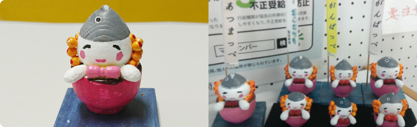

【期間限定】うけどん年賀状でつながっぺ♪
ふたば未来学園の高校生たちがうけどん年賀状を作ってくれました！
年賀ハガキに印刷して、浪江町のお友達や親戚にうけどん年賀状を送っちゃおう！
【定番】うけどんイラストで遊ぼう！
お手紙やお知らせ、子どもたちの工作や手づくりグッズに！使いやすいイラストを12点用意しました。
ダウンロードして活用してね！
「こんなうけどんグッズ作っちゃいました！」事例紹介コーナー
-
挿し絵
コミュニティ支援員さんが定期的に発行しているお便りに使っていただいています！
-
案内板
コミュニティ支援員さんが定期的に発行しているお便りに使っていただいています！
-
包装紙
子どもの笑顔フォトコンテストの参加賞の包み紙として、教育委員会事務局の皆さんが作成。
-
Tシャツ(動画あり)
平石仮設の皆さんによる手づくりうけどんTシャツです。カラフルなバリエーションが目立っていてとてもステキです。これを着て、福島県観光復興キャンペーンに参加されました！
＞映像はこちら
-
ポロシャツ
コミュニティ支援員さんが定期的に発行しているお便りに使っていただいています！
-
トートバッグ
同じく、なみえダンベル交流会の皆さんのレッスン用のカバンとして。「Namie 元気応援 Ukeバッグ」というネーミングもついてとってもカッコいい！皆さんのポーズもキマってます♪
-
キーホルダー
群馬の復興支援員さんの手づくりうけどんキーホルダー。町民の皆さんに訪問時に配られているそうです。
-
起き上がり小法師
｢なみえフェア in セデッテかしま｣では、うけどん起き上がり小法師絵付け体験コーナーを開設！
-

木彫り
こんな作品も！木彫りが得意な幾世橋の町民の方の手づくりです。福島市のあつまっぺ交流館では、こんな風に飾ってあります！是非、一度見に行かれてはいかがでしょうか？
使用上のご注意
・自分自身や家族など限られた範囲内で、仕事以外の目的で使用する場合にお使いいただけます。
・企業や団体等でお使いの場合は、浪江町役場復興推進課までご相談ください。
浪江町役場復興推進課
TEL: 0240-62-4731
Email:
namie12030@town.namie.lg.jp